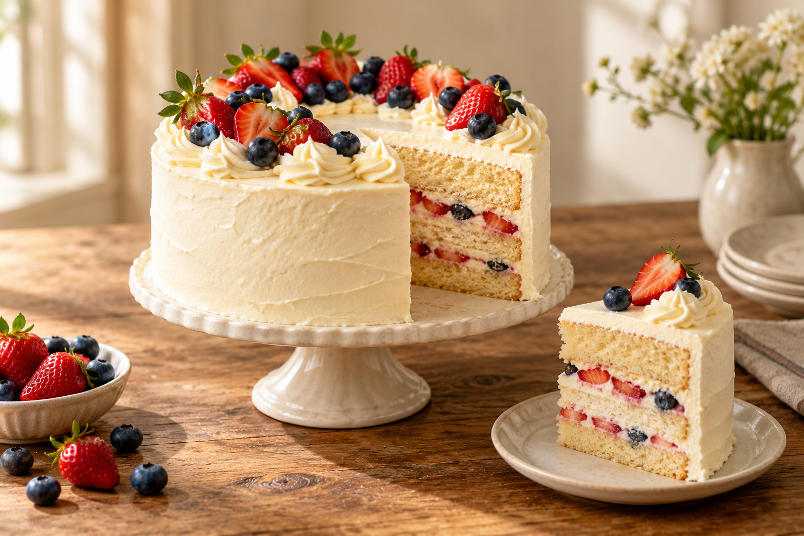

Fresh from our oven
Our selection changes a little with the season, but these are the favorites people come back for. Prices below are sample ranges for this project.
Breads

From hearty whole wheat to a simple sourdough, our loaves are baked for sharing.
About $5–$10 per loaf.

Pastries
Buttery croissants, cinnamon rolls, and fruit-filled treats for mornings on the go.
Pair your favorite pastry with a warm drink, or take a selection home to share.
About $3–$6 each.
Cakes

Simple celebration cakes made with care for birthdays, family dinners, and other happy occasions.
Contact us to discuss available flavors, sizes, and decorations.
About $25–$65, depending on size and decoration.
We do not take payments online.
Ask about availability or place a pickup request
We will follow up to confirm the details.